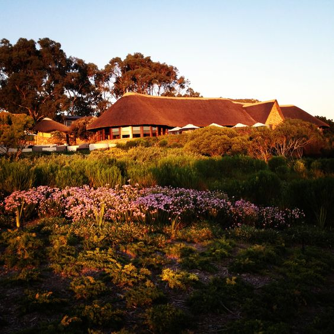

Personal Websites: An Act of Rebellion in a Corporate Dominated Era
Laurel Schwulst, a designer, artist, and writer, passionately discusses the evolving essence and significance of websites in today's world...
Especially crucial in this age...
Amid the vast expanse of the digital 'cloud'...
In a world increasingly commodified and commercialized...